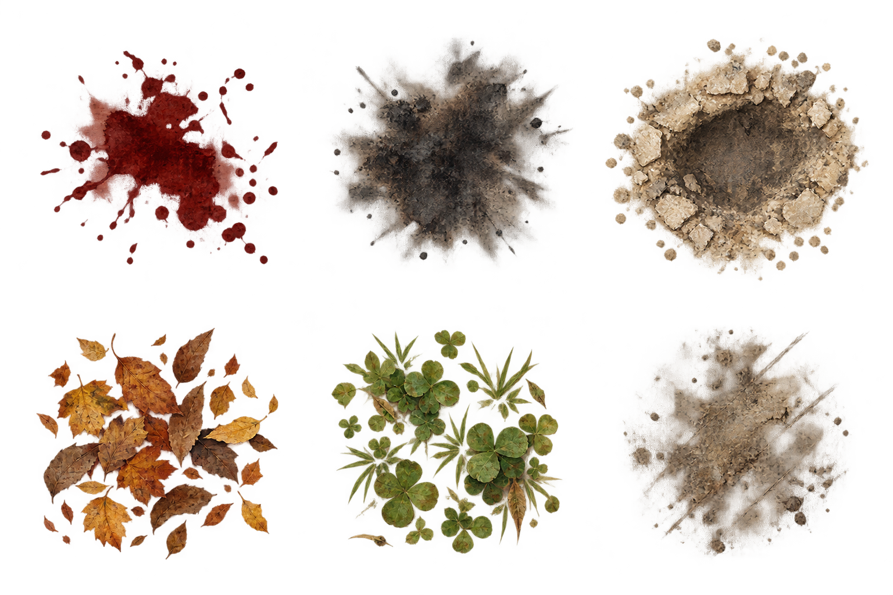
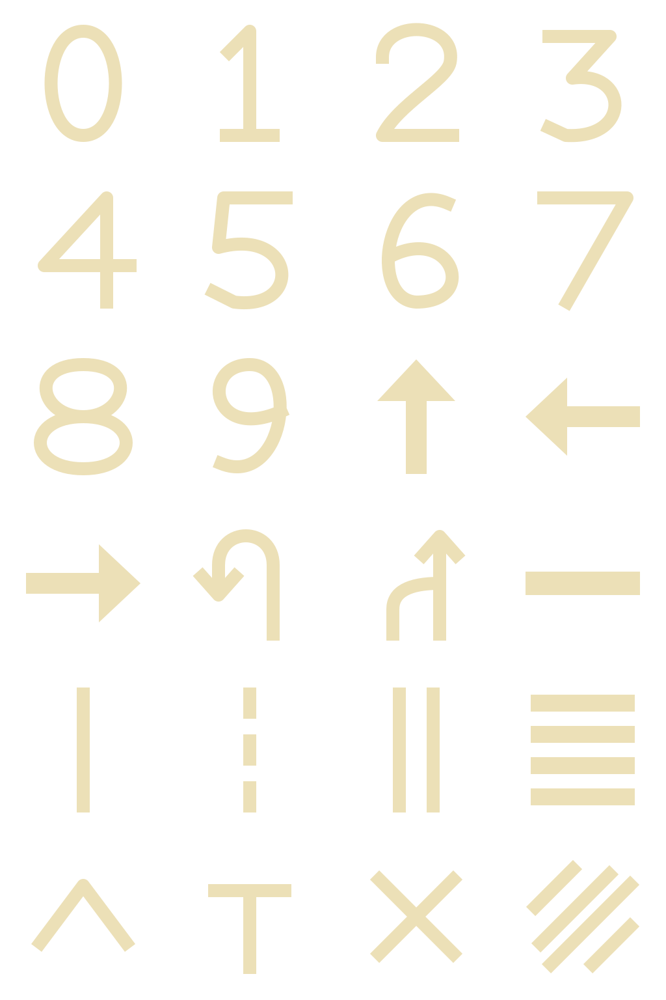

Nautilus · Artist contract proposal
Original sample artwork for sparse, ordered surface decoration. This is a static art review; the clipping/provider contract is proposed separately. Apparent craters and flat plants do not change geometry.


Digits 0–9, directional arrows, lines and small road symbols. Original vector masters; no external font or raster source.
Transparent checkerboard is preview chrome, not artwork. Source alpha and resource hashes remain exact. Organic gutter alpha values at or below 2/255 are declared for removal by the proposed sampling profile; the renderer is not implemented here.